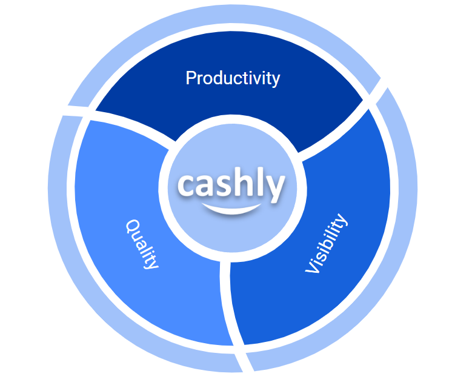
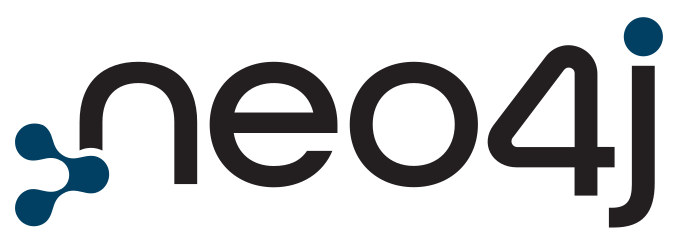
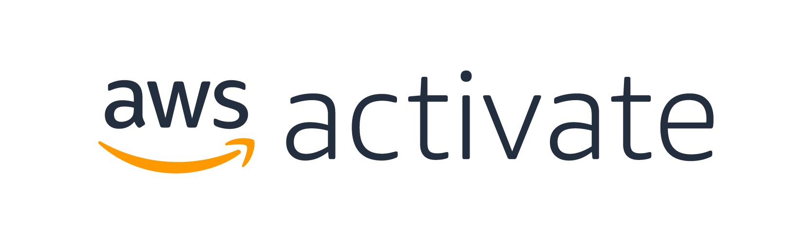

Built by mortgage people
The product comes from real workflow pain, not generic CRM assumptions. That means the tools are shaped around how brokerages actually operate.
Cashly started as a response to a real operating problem: mortgage teams were spending too much time on fragmented admin work, while borrowers were still being left without enough clarity when traditional lending options fell short.
We started off as a brokerage, trying to figure out the best workflow to close more deals while spending less time on repetitive tasks. That search led to Cashly: a platform designed specifically for mortgage brokers, lenders, and the borrowers trying to understand what their real options actually are.
Today, our platform uses AI to support the mortgage process from application to approval, helping agents stay organized, helping lenders evaluate fit faster, and helping borrowers move forward with more transparency and confidence.

Cashly exists to bring more clarity, speed, and consistency to an industry that still loses too much time to disconnected systems and manual process gaps.


The product comes from real workflow pain, not generic CRM assumptions. That means the tools are shaped around how brokerages actually operate.
We use AI to reduce repetitive steps, surface better information faster, and create cleaner handoffs, not just to add buzzwords to the interface.
Mortgage decisions carry real pressure. We believe borrowers should get clearer explanations, better visibility on tradeoffs, and a more confident path forward.
The platform keeps evolving, but the direction stays steady: make the workflow more usable, make decisions easier, and remove the drag that slows good teams down.
One clean view of contacts, deals, lender options, and activity always beats scattered tools.
Automation matters most when it improves consistency and keeps the process moving reliably.
Technology should give brokers more time to advise, connect, and close, not box them in.